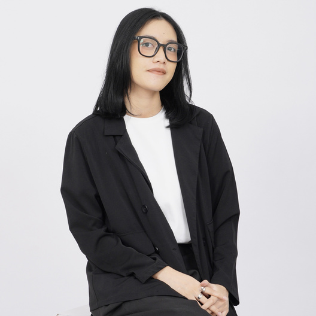
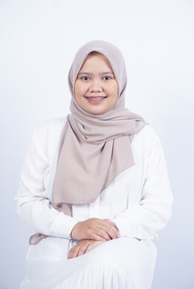
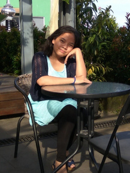
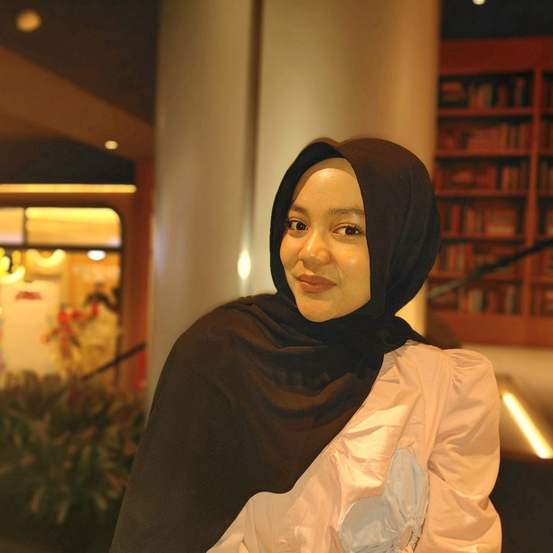
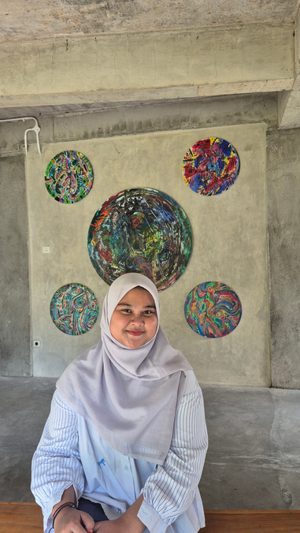
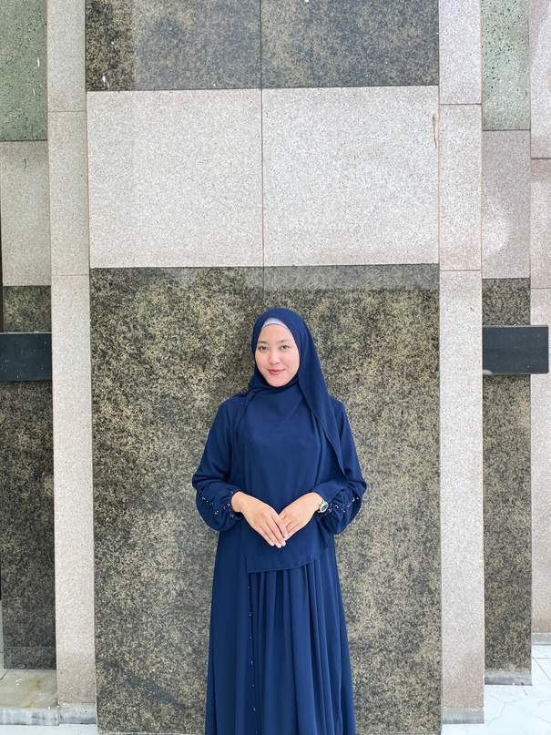
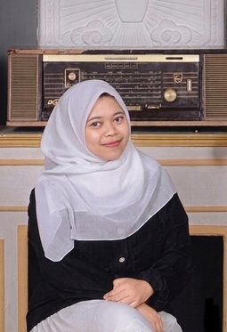
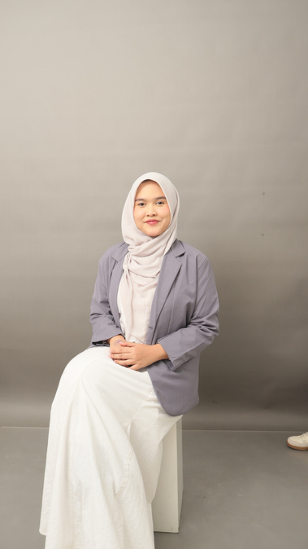
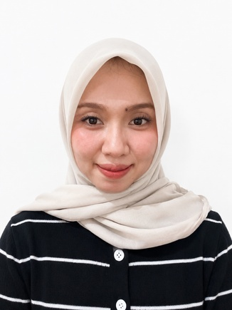

5 Cara Menenangkan Pikiran Saat Mengalami Overthinking Parah
Pelajari teknik grounding sederhana yang terbukti efektif mengembalikan fokus dan ketenangan emosi Anda...
Temukan kelegaan bercerita bersama Teman Cerita sebaya yang suportif dan terjangkau, atau konsultasi mendalam dengan Psikolog Klinis berizin resmi (SIPP). Privasi 100% aman, tanpa stigma, tanpa penghakiman.

Konselor & Psikolog
Sesi Konsultasi Selesai
Kerahasiaan Privasi
Tingkat Kepuasan Klien
Mulai dari curhat santai sebaya yang ramah di kantong hingga penanganan klinis komprehensif bersama psikolog berlisensi resmi.
Ruang aman untuk berkeluh kesah tanpa penghakiman. Cocok untuk melepas overthinking, penat kuliah/pekerjaan, kesepian, dan curhat sehari-hari bersama pendengar sebaya terlatih.
Mulai Curhat (Mulai Rp 50rb)Sesi privat dan mendalam bersama Psikolog Klinis berizin (SIPP) via Chat atau Video Call. Penanganan terstruktur untuk kecemasan akut, trauma emosional, depresi, dan manajemen stres.
Konsultasi PsikologPemeriksaan psikologis terstandar (Minat Bakat, Kepribadian, Kesiapan Kerja, DASS-21) dengan laporan interpretasi psikologis resmi dari tim psikolog terverifikasi.
Daftar Asesmen OnlineBimbingan khusus untuk mengatasi quarter-life crisis, kejenuhan kerja (burnout), transisi karir, serta dinamika hubungan interpersonal bersama psikolog karir berpengalaman.
Jadwalkan SesiPengukuran objektif menggunakan instrumen psikometri yang sah dan tersertifikasi oleh tim psikolog dan asesor berlisensi. Hasil berupa Laporan Hasil Pemeriksaan Psikologis (LHP) resmi.
Seluruh administrasi, skoring, dan interpretasi diawasi langsung oleh Tim Supervisi Klinis sesuai standar HIMPSI
Pilih pendengar sebaya (S.Psi) yang suportif atau psikolog profesional berlisensi resmi (STR & SIPP aktif) sesuai kebutuhan Anda








Prosedur standar pelayanan klien sesuai Buku Panduan Operasional Shine Journey untuk jaminan kenyamanan dan privasi
Pengisian formulir pendaftaran resmi & persetujuan layanan (Informed Consent) secara online.
Database sistem menerima data secara terenkripsi, menjaga kerahasiaan identitas dan keluhan klien.
Koordinator layanan meneruskan data intake kepada Person in Charge (PIC) Konseling / Asesmen.
PIC menugaskan Teman Cerita (S.Psi) atau Psikolog Klinis berizin (STR & SIPP) sesuai kebutuhan klien.
Konselor/Psikolog terpilih menghubungi klien secara privat untuk pelaksanaan sesi konsultasi.
Ulasan tulus dari klien yang telah menemukan ruang aman dan pemulihan diri di Shine Journey
"Awalnya ragu mau cerita karena takut di-judge. Pas nyoba sesi Teman Cerita sama Kak Rasidia waktu overthinking parah soal kerjaan dan quarter-life crisis, rasanya plong banget. Didengerin dengan sabar tanpa dihakimi, dikasih insight yang bikin pikiran lebih adem. Biayanya juga ramah banget buat fresh graduate!"
"Sesi online dengan Wilda Nurbayani, M.Psi., Psikolog bener-bener ngebantu saya keluar dari fase burnout berat dan panic attack yang berminggu-minggu ganggu tidur. Pendekatan CBT-nya sistematis dan solutif. Setelah 3 sesi, saya merasa punya kendali lagi atas pikiran dan emosi saya."
"Skripsi sempat macet dan ngerasa cemas terus tiap buka laptop. Saya mulai dari ikut Asesmen Mandiri DASS-21 gratis di Shine Journey, ternyata skor kecemasan cukup tinggi. Dari situ diarahkan sesi konseling. Psikolognya sangat hangat dan bikin saya nyaman terbuka."
"Sebagai pengusaha dengan jam kerja padat, jarang ada ruang untuk jujur soal beban mental tanpa dikira mengeluh. Layanan di Shine Journey sangat fleksibel via WhatsApp dan web, respons cepat, dan privasi dijaga 100%. Sangat saya rekomendasikan!"
Artikel terpercaya yang ditulis dan ditinjau oleh psikolog profesional kami
Pelajari teknik grounding sederhana yang terbukti efektif mengembalikan fokus dan ketenangan emosi Anda...
Jangan tunggu hingga lelah fisik dan mental. Kenali sinyal kejenuhan sejak dini agar kesehatan jiwa tetap terjaga...
Sulit tidur seringkali menjadi alarm bahwa ada beban pikiran yang belum terurai. Temukan cara meredakannya...
Konsultasi dengan Teman Cerita atau Psikolog tanpa perlu antre di klinik. Akses langsung melalui peramban web maupun WhatsApp resmi.
Halo, ada yang ingin diceritakan hari ini? 👋
Anda tidak harus menghadapi segalanya sendirian. Ceritakan apa yang Anda rasakan hari ini kepada konselor dan psikolog kami.
Kontak Resmi: 083187689054 an. Shine Journey · Privasi Anda 100% terjaga rahasia.